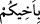

biliyordu. Bu sebeple kardeşlerinin yanına gelecekleri zamanı bekliyordu.
Dolayısıyla onları gördüğünde tanıdı. “onlar ise onu tanımıyorlardı.” Yani o, onları
tanırken -aradan uzunca bir süre geçtiğinden dolayı- onlar onu tanımıyorlardı. Nitekim
İbn Abbas (r.anhümâ) kardeşlerinin Yûsuf’u kuyuya atmaları ile Mısır’da huzuruna
çıkmaları arasında kırk senelik bir zaman olduğunu söyler.
Yûsuf’un kardeşlerinden ayrılması çocukluk yıllarına rastlar. Onu tanımamalarının bir
sebebi de Yûsuf’un öldüğüne inanmalarıdır. Ayrıca Yûsuf’u akıllarına ara sıra
getirmeleri; en son kuyuya atılmış, çok az bir paraya satılmış biri olarak bıraktıkları
Yûsuf’un şu anda gördükleri güç ve nüfûz sahibi hükümdar olamayacağını düşünmeleri,
bir de heybetinden ve büyüklüğünden dolayı o anda fazla akıl yürütememeleri bu
konudaki diğer sebeplerdir.
et-Te’vîlâtü’n-Necmiyye’de şöyle der:
Yûsuf onları ma’rifet ve nübüvvet nuruyla tanıdı, oysa onlar onu tanımıyorlardı.
Çünkü gerek mâsıyetlerinin gerekse tevbe ve istiğfarın nurundan mahrum olmalarının
karanlığı hâlâ sürmekteydi. Zaten Yûsuf’u hakkıyla tanımış olsalardı az bir paraya
satmazlardı.
59. (Yûsuf) onların yüklerini hazırlayınca dedi ki: “Baba bir kardeşinizi de bana
getirin.
Görmüyor
musunuz,
ben
ölçeği
tam
dolduruyorum
ve
ben
misafirperverlerin en iyisiyim.
Yûsuf “onların yüklerini hazırlayınca” yani azık ve yolcunun ihtiyaç duyacağı diğer
şeyleri tamamlayıp satın almak için geldikleri zahîreyi de bolca hayvanlarına yükletince
“dedi ki: “Baba bir kardeşinizi de bana getirin.”
Yûsuf (a.s.), kardeşlerini tanımadığına onları daha fazla inandırmak için “
”
dememiş, “
” demiştir. Yûsuf (a.s.)’ın bu sözü muhtemelen şu sebepten
söylemiştir: Kardeşleri, Bünyamin için normalden fazla pay isteyince doğru söyleyip
söylemediklerini anlamak için yapıyormuş gibi o kardeşlerini getirmelerini de şart
koşarak istedikleri payı vermiştir. Yûsuf (a.s.) insanlar arasında yiyecek maddelerini
eşit dağıtabilmek amacıyla normalde herkese tek bir yük verirdi.
Kâşifî şöyle der: “Her birinin bir devesine bir yük verdiler. Yâkub (a.s.)’ın oğulları
“Babımızın hizmetinde olan kardeşimiz için de bir deve yükü verin.” dediler. Yûsuf
(a.s.):
“Ben adamları sayıp veririm, develeri saymam.” dedi. Onlar da ısrarla istemeye